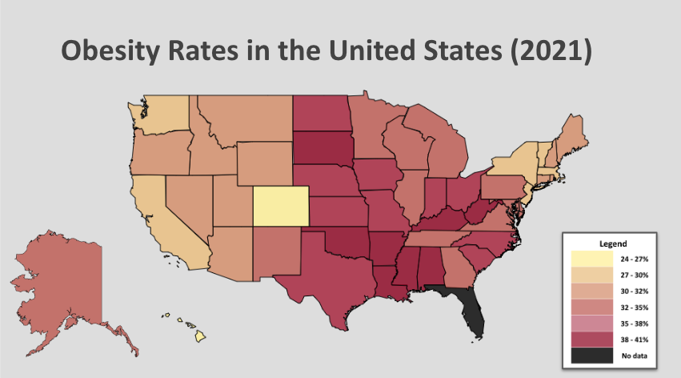

hw-03: Interactive Webpage, and Marks & Channels
Marks
Area
Channels
Color Hue
- The channel "color hue" represents the categorical attribute "Democrat" or "Republican" determined by the majority vote in each state.
This channel is a great choice as it follows the commonly known assignment of the color red to the Republican Party
and the color Blue to the Democratic party.
Shape
- This channel is being used to represent the categorical attribute "State". This is an excellent choice as it's the most obvious way to distinguish between the different states in the United States.
One could argue, though, that this channel is being used based off the assumption that the viewer is familiar with the map of the United States and the different state's shape, so the author would have to ensure that the main audience of this visualization is United States inhabitants.
Spatial Region
- This channel is being used in conjunction with the channel "Shape" to represent the states in the USA. This, again, is an excellent decision as it follows the commonly known positioning of the states on the map, but again, one could argue that it's based off the assumption that the viewer is familiar with the map of the United States and the different state's shape, so the author would have to ensure that the main audience of this visualization is United States inhabitants.
ColorMaps
- This map is using a divergent color map. It's representing the attribute "Vote count". It's using two colors to indicate extremes of a range, and in this case the range is the number of votes
(high number of votes for Republican party is red, high number of votes for Democratic party is blue).
The author made a great choice with this color map as it abides by the the well-known, widely accepted color assignments for the political parties,
and the drastic difference between the two colors calls makes the two extremes easily distinguishable.

Marks
Channels
- Color Saturation
- This channel is being used to represent the ordered attribute "scoring value". This is definitely a good choice in representing two sides of a spectrum
(below average scoring values are associated with pink, above average scoring values are associated with orange, and the closer the scoring value gets to the average, the lighter the colors become),
but as discussed later, the author uses a poor choice of colors in this channel.
- Positioning on common scale
- This channel is being used to represent the ordered attributes "launch angle" and "exit velocity".
This is defintiely a good choice as the author follows the assumed ordering of an x and y axis, namely, that the lowest values on the x axis (in this case, exit velocities)
are further to the left on the axis, and higher values to the right, and the the lowest values on the y axis (launch angle) are towards the bottom, and the values increase as you move up the y axis.
This is easy for viewers to understand and consequently associate the bottom left hand corner of the visualization with low launch angle and low exit velocity, and the top right hand corner of the visualization with high launch angle and high exit velocity.
ColorMaps
- This visualization is using a divergent color map, where it's representing the two extremes of scoring value,
with below average scoring value being represented on one end of the spectrum with a light pinkish-purple color,
and above average scoring value represented on the other end of the spectrum with a light orange color. The author has the right idea using the divergent color map,
but poor execution. The colors light pink and light orange are not distinguishable enough, and viewers don't have any natural assumption about what these colors mean.
It would've been more effective to use a dark red and a dark blue, for instance, but pink and orange are too closely related to really emphasize the two extremes.
Also, the color white is supposed to represent the "average" scoring values, but the white background is making it difficult for viewers to make that connection.

Marks
- Area. To represent each state, the map uses an area mark, and to represent varying rates of obesity, the legend on the bottom left of the visualization uses area marks.
Channels
Color (Saturation)
- The channel "saturation" represents the ordered, quantitative attribute "Obesity rate" or "Republican" determined by the percentage of obese adults in each state. This is good mapping because a darker color indicates more/higher, which in this case means a state has a higher obesity rate.
Shape
- This channel is being used to represent the categorical attribute "State". This is an excellent choice as it's the most obvious way to distinguish between the different states in the United States.
One could argue, though, that this channel is being used based off the assumption that the viewer is familiar with the map of the United States and the different state's shape, so the author would have to ensure that the main audience of this visualization is United States inhabitants.
Spatial Region
- This channel is being used in conjunction with the channel "Shape" to represent the states in the USA. This, again, is an excellent decision as it follows the commonly known positioning of the states on the map, but again, one could argue that it's based off the assumption that the viewer is familiar with the map of the United States and the different state's shape, so the author would have to ensure that the main audience of this visualization is United States inhabitants.
ColorMaps
- This map is using a sequential color map. A sequential colormap for this visualization is good mapping because the attribute "Obesity rate" is ordered and quantitative; furthermore, people tend to associate darker as meaning more, which makes sense in this scenario as the darker states have higher obesity rates. This ties into saturation indicating a difference in the amount of phenomenon, which in this case is the obesity rate amongst all states. .
Acknowledgements